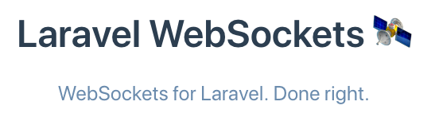
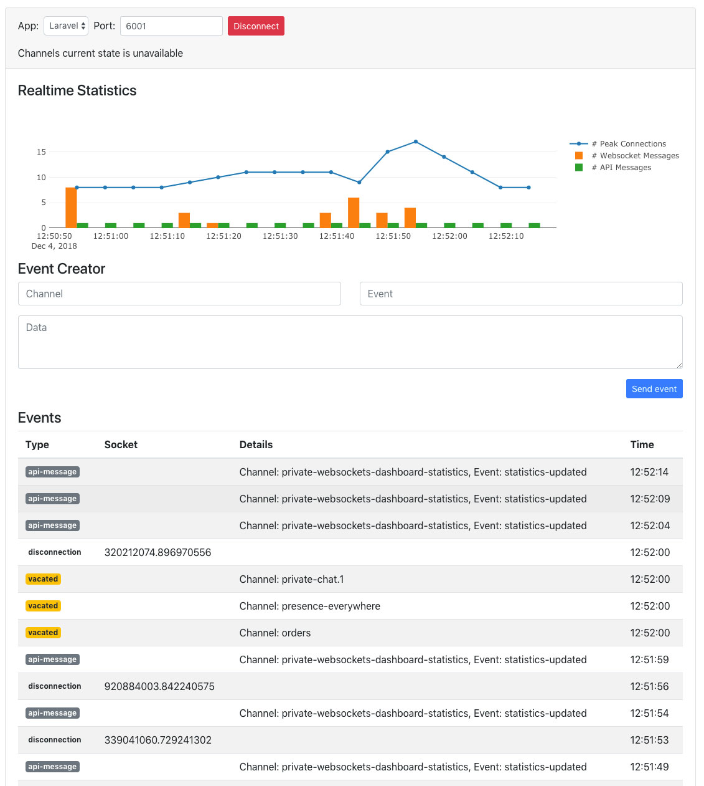

WebSockets in Laravel
- Published: 01-07-2019
Getting started with WebSockets
Recently, Freek Van der Herten (from Spatie) and Marcel Pociot (from BeyondCode) have published a package called Laravel WebSockets which provides an alternative to services like Pusher.
In this post, I want to explain how to get started with real-time broadcasting in Laravel using WebSockets. The stepwise guide will explain how to set up the essentials for broadcasting. The first part covers using Pusher, and the second part dives into switching to the Laravel WebSockets package.

When to use WebSockets?
WebSockets is a relatively young TCP protocol, finalized in 2011, enabling two-way communication between the server and a user's browser. They are nowadays commonly used in applications that want to communicate changes in real-time. Chatrooms are probably the most well-known example, along with online multiplayer games (quizzes), social media streams, and sports tickers.
Our demo application
Let's assume our application needs to do some heavy lifting (which we will mimic using PHP's sleep() function). For example, imagine that a user can upload a video, which needs to undergo a time-intensive post-processing task. Since we don't want to keep our users waiting, we'll put a job on the queue to execute that work behind the scenes. In the meantime, our user will see a "waiting to be processed" status until the job is processed. Within the job, we'll emit an event upon completion that should be broadcasted to the specific user only. In turn, that should update that user's status without requiring a "hard refresh" of the web page.
Common prerequisites
Both implementations, Pusher as well as Laravel WebSockets, require the following prerequisites:
Laravel Echo
Echo is a javascript library that makes it a breeze to listen to broadcasted events from our front end. You can install Laravel Echo via npm:
npm install --save laravel-echo pusher-js
After installation, uncomment the Laravel Echo specific code in your resources/js/bootstrap.js file:
import Echo from 'laravel-echo'
window.Pusher = require('pusher-js');
window.Echo = new Echo({
broadcaster: 'pusher',
key: process.env.MIX_PUSHER_APP_KEY,
cluster: process.env.MIX_PUSHER_APP_CLUSTER,
encrypted: true
});
Redis
In this example, we'll use Redis as our queue driver, which can be installed using composer:
composer require predis/predis
Now, in the .env file set QUEUE_CONNECTION=redis
Tips and tricks before starting
If you are new to broadcasting, some things might be a bit tricky at first. Therefore I wanted to dedicate a small section to hopefully clear things up.
Uncomment the BroadcastingServiceProvider
I've been tricked more than once in forgetting to uncomment the following line in the providers array of config/app.php. Make this the first thing you do! (if you're like me).
<?php
/*
* Application Service Providers
*/
App\Providers\AppServiceProvider::class,
App\Providers\AuthServiceProvider::class,
App\Providers\BroadcastServiceProvider::class,
App\Providers\EventServiceProvider::class,
App\Providers\TelescopeServiceProvider::class,
App\Providers\RouteServiceProvider::class,
],
Always recompile your assets
When changing the PUSHER_* credentials in the .env environment file, always recompile your assets using npm run dev (or watch / prod). Recompilation is necessary, as Laravel Echo fetches the variables at compilation from your environment variables, as you can see in the instantiation of Echo in resources/js/bootstrap.js:
({
key: process.env.MIX_PUSHER_APP_KEY,
cluster: process.env.MIX_PUSHER_APP_CLUSTER
});
Pusher
The easiest way to get started is using the Pusher implementation. We'll first require the Pusher specific package using composer.
composer require pusher/pusher-php-server "~3.0"
Now, we need to get our credentials from Pusher.com. If you don't have an account yet, you first need to register. They offer a free account, which should suffice for small to medium applications. On their website, create a new app and select the cluster that's closest to you. Copy the credentials on the "App Keys" page to the .env file:
.env:
PUSHER_APP_ID=(app_id)
PUSHER_APP_KEY=(app_key)
PUSHER_APP_SECRET=(app_secret)
PUSHER_APP_CLUSTER=(cluster)
That's all there is to it. Next up: building the demo application.
Building our demo application
In this section, let's walk through a minimum setup to get our basic demo application working.
First, we'll scaffold the default Laravel authentication and a Video model with a migration and a controller.
php artisan make:auth
php artisan make:model Video -mc
Add a user to the Videos table migration:
<?php
public function up() {
Schema::create('videos', function (Blueprint $table) {
$table->bigIncrements('id');
$table->bigInteger('user_id');
$table->timestamps();
});
}
And finally, migrate:
php artisan migrate
We have a post route to store a new video and a show route, which will let the user know his/her uploaded video's current status.
<?php
Auth::routes();
Route::get('/videos/{video}', 'VideoController@show');
Route::post('/videos', 'VideoController@store');
In the VideoController, we'll add the corresponding methods.
<?php
use App\Video;
use App\Jobs\ProcessVideo;
use Illuminate\Http\Request;
class VideoController extends Controller {
public function store(Request $request)
{
// here we would the uploaded video from $request
// and store it along with its path
$video = Video::create([]);
// Then, pass the heavy lifting to our job
ProcessVideo::dispatch($video);
return redirect('/videos/' . $video->id);
}
public function show(Video $video)
{
return view('videos.show', compact('video'));
}
}
To reach the post route, we add a form to welcome.blade.php:
<form action="/videos" method="POST">
@csrf
<!-- some upload and other form fields -->
<button>Upload some video</button>
</form>
After posting this form, the user will hit the store() method of our controller, dispatching a ProcessVideo job before the user gets redirected to the video's show page. We haven't created any of these yet, so let's start by scaffolding the ProcessVideo job:
php artisan make:job ProcessVideo
Since we want to reference the video that needs processing, accept the $video in the constructor. In the handle() method, the application will sleep for 10 seconds and then emit an event called VideoWasProcessed. Don't forget to import the Video and VideoWasProcessed classes.
<?php
// app/Jobs/ProcessVideo.php:
use App\Video;
use App\Events\VideoWasProcessed;
class ProcessVideo implements ShouldQueue {
use Dispatchable, InteractsWithQueue, Queueable, SerializesModels;
public $video;
public function __construct(Video $video) {
$this->video = $video;
}
public function handle() {
sleep(10);
event(new VideoWasProcessed($this->video));
}
}
Since the job implements the ShouldQueue interface, Laravel will always try to queue this job. Then, our Laravel queue workers (using the Redis connection) in the background will make sure the job is executed. When completed (in our case, after 10 seconds), the videoWasProcessed event will be fired.
We haven't created this event yet, so run:
php artisan make:event VideoWasProcessed
In addition to accepting the $video in the constructor, we also want to implement the ShouldBroadcast protocol. Our application will not broadcast the event unless you implement ShouldBroadcast. Also, don't forget to import the Video class.
<?php
// app/Events/VideoWasProcessed.php:
use App\Video;
class VideoWasProcessed implements ShouldBroadcast {
use Dispatchable, InteractsWithSockets, SerializesModels;
public $video;
public function __construct(Video $video) {
$this->video = $video;
}
public function broadcastOn() {
return new PrivateChannel(
"videos.{$this->video->id}"
);
}
}
The broadcastOn() method specifies which channel to broadcast on.
As we only want to inform the owner of the uploaded video on the processing status, we broadcast on a PrivateChannel. Who has access to this channel can be configured in the routes/channels.php file. If the closure (as defined below) returns true, the given user has access. If the closure returns false, authorization fails and the user can't access the channel. In our example, we'll add a constraint that only allows the video owner to see updates.
<?php
// routes/channels.php:
Broadcast::channel('videos.{id}', function ($user, $id) {
return $user->id === Video::find($id)->user_id;
});
Reflecting updates on the front end
The magic revolves around the show page of our video. For the javascript side of things, we'll leverage VueJS.
resources/views/videos/show.blade.php:
<html>
<head>
<title>Video's page</title>
<!-- always include your CSRF token -->
<meta name="csrf-token" content="{{ csrf_token() }}">
</head>
<body>
<div id="app">
<!-- our Vue component -->
<video-progress :video="{{ $video }}" />
</div>
<!-- include our compiled javascript -->
<script src="{{ asset('js/app.js') }}"></script>
</body>
</html>
The VideoProgress.vue component consists of a data variable processing that holds information on the video's processing status. In the created() lifecycle hook of Vue, we defined a private listener that passes through the video's id and listens for a VideoWasProcessed event. When it gets that event, the closure is executed, and in this case, the processing data variable will be set to false, reactively updating the span in our template.
resources/js/components/VideoProgress.vue:
<template>
<div>
Your video with ID {{ video.id }} is currently:
<span style="color: red;" v-if="processing">
Processing...
</span>
<span style="color:green" v-else>
Finished!
</span>
</div>
</template>
<script>
export default {
props: ['video'],
data() {
return {
processing: true,
}
},
created() {
window.Echo.private(`videos.${this.video.id}`)
.listen("VideoWasProcessed", (e) => {
this.processing = false;
});
},
}
</script>
Lastly, we need to register our Vue component:
resources/js/app.js:
Vue.component(
'video-progress',
require('./components/VideoProgress.vue').default);
After recompilation of all assets using npm run dev (or watch / prod), start a queue worker (php artisan queue:work) and visit the demo app site. In the welcome view, click the submit button, and (if all went well) you should see the status updating from 'running' to 'finished' automatically after the job was processed.
Switching to Laravel WebSockets
The Laravel WebSockets package makes it easy to smoothly transition from using Pusher to using your own WebSockets server.
Following the instructions in the documentation:
- We first need to require the package via composer:
composer require beyondcode/laravel-websockets
- Then, publish the migrations
php artisan vendor:publish --provider="BeyondCode\LaravelWebSockets\WebSocketsServiceProvider" --tag="migrations"
- Run the migrations:
php artisan migrate
- Publish the configuration file:
php artisan vendor:publish --provider="BeyondCode\LaravelWebSockets\WebSocketsServiceProvider" --tag="config"
Configuration
The package will use the pusher driver, but we don't actually want to use Pusher. Therefore we add our own host and port configuration to the 'pusher' section in config/broadcasting.php:
<?php
// config/broadcasting.php:
'pusher' => [
'driver' => 'pusher',
'key' => env('PUSHER_APP_KEY'),
'secret' => env('PUSHER_APP_SECRET'),
'app_id' => env('PUSHER_APP_ID'),
'options' => [
'cluster' => env('PUSHER_APP_CLUSTER'),
'encrypted' => true,
'host' => '127.0.0.1',
'port' => 6001,
'scheme' => 'http'
],
],
In bootstrap.js, we need to tell Laravel Echo to use the alternative host and port (wsHost, wsPort):
resources/js/bootstrap.js:
import Echo from 'laravel-echo'
window.Pusher = require('pusher-js');
window.Echo = new Echo({
broadcaster: 'pusher',
key: process.env.MIX_PUSHER_APP_KEY,
wsHost: window.location.hostname,
wsPort: 6001,
disableStats: true,
});
Although we are not using Pusher, we still need to supply some Pusher configuration in our .env environment file:
.env:
PUSHER_APP_ID=testapp
PUSHER_APP_KEY=websocketkey
PUSHER_APP_SECRET=somethingsecret
Compiling assets
We need to recompile bootstrap.js, as discussed in the Tips and Tricks section, by running npm run dev (or watch / prod).
Starting our WebSockets server
Finally, boot up the WebSockets server and start a queue worker (in a separate terminal window):
php artisan queue:work
php artisan websockets:serve
Follow the documentation to learn which other options are available to you.
Now, you should see that our demo application still works but now handling the WebSockets locally.
Running the WebSockets server in the background
Like queue workers, we want to run the WebSockets server as a separate process. The solution is the same as for our queue workers: let supervisord take care of it. To keep this post focused, please review the following articles:
Dashboard
The Laravel WebSockets package even comes with a dashboard, comparable to Pusher's Debug Console. The dashboard's lives by default on the /laravel-websockets path from your demo application's root and is automagically available. Follow the documentation to learn more about the dashboard.

Conclusion
I hope that I've convinced you that it's easier than ever to get started with real-time broadcasting. This article discussed two of the many possible implementations in this post.
Pusher is a great option to get up and running fast and easy. They offer a free account that provides a maximum of 100 simultaneous connections, 200 000 messages a day, and unlimited channels. It's a no brainer for small applications, and I would always choose for the convenience of Pusher.
However, suppose your application needs a bit more room to breathe. In that case, the Laravel WebSockets package offers a great alternative that lets you handle all WebSocket connections yourself and even comes with a dashboard! On top of that, switching over from Pusher to Laravel WebSockets is a breeze.
Happy broadcasting!
Update(s)
- As "human_brain_whore" suggested on Reddit, I've added links to the appropriate documentation pages for the configuration of supervisord to take care of automatically (re)starting queue workers and the WebSockets server.
- Common Issues using Laravel WebSockets